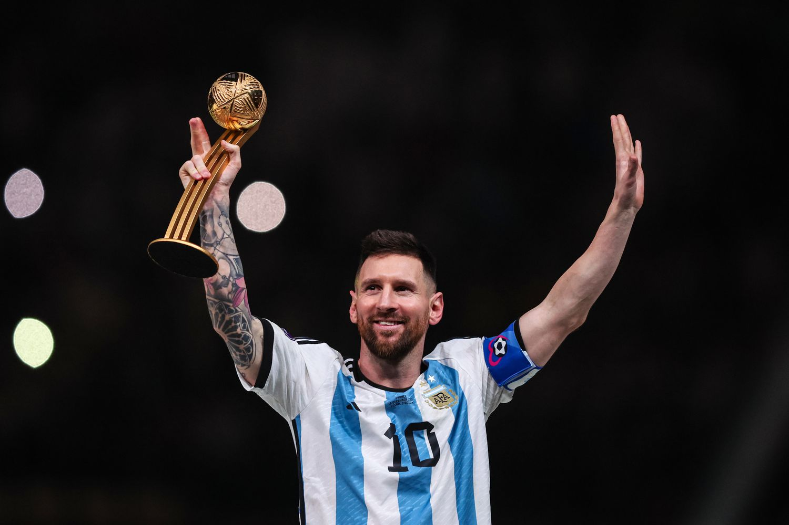

Lionel Andrés Messi, born on June 24, 1987, in Rosario, Argentina, is widely regarded as one of the greatest footballers in history. Known for his unmatched dribbling, vision, and goal-scoring ability, Messi has inspired millions of fans around the world. His journey from a young boy with growth challenges to the pinnacle of world football is a story of perseverance, talent, and humility.
Early Life & Struggles
- Born in Rosario, Argentina.
- Diagnosed with a growth hormone deficiency at age 11.
- Family struggled to afford treatment.
- FC Barcelona signed him at 13 and paid for his medical care.
Career Highlights
- 2004 – Made his debut for FC Barcelona at age 17.
- 2009 – Won his first Champions League and Ballon d’Or.
- 2012 – Scored 91 goals in a single calendar year (world record).
- 2021 – Won Copa América with Argentina, his first major international trophy.
- 2022 – Crowned FIFA World Cup Champion with Argentina in Qatar.
- Holds the record for the most Ballon d’Or awards (8).
Achievements & Records
- Over 800 career goals.
- Over 40 trophies won with club and country.
- Barcelona’s all-time top scorer.
- First player to score in 5 different World Cups.
- 8× Ballon d’Or winner.
Messi is celebrated for his magical dribbling, precise passing, and ability to score from almost anywhere on the pitch. Beyond statistics, his humility, sportsmanship, and consistency have made him a role model for aspiring athletes worldwide.
Cristiano Ronaldo once said:
Messi makes me a better player and vice versa.
Pep Guardiola:
Don’t write about him, don’t try to describe him. Watch him.
Lionel Messi is more than a football player — he is an inspiration. His story teaches us that no matter the obstacles, passion, hard work, and determination can take you to the top. He will always be remembered as not just the greatest footballer, but as a symbol of perseverance and humility.